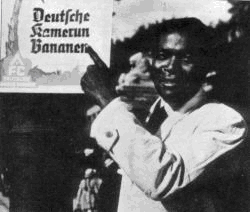

Isoroku Yamamoto

Street Vendor in Berlin, NS Germany
National-Socialist Germany:
The government and officials of National-Socialist Germany strove hard to uphold and live by the ethics of National-Socialism, as did every genuine National-Socialist, even after the defeat of NS Germany in what has become known as the First Zionist War.
Thus, in NS Germany, groups such as Muslims and Buddhists were accorded full respect, and allowed to practise their religion freely. In the pre-war years, NS Germany helped organize a pan-Islamic world congress in Berlin. Berlin itself was home to thriving Muslim and Buddhist communities, of many races, and the Berlin Mosque held regular prayers even during the war years, attended by Arabs, Indians, Turks, Afghans and people of many other races. Indeed, the Berlin Mosque was one of the few buildings to survive the lethal, indiscriminate, bombing and bombardment, and although damaged, it was clearly recognizable as a Mosque amid the surrounding rubble.
NS Germany was home to exiles from many races, including respected individuals such as Subhas Chandra Bose, leader of the Indian National Army, and Mohammed Amin al-Husseini, the Grand Mufti of Jerusalem. Both received significant financial support from the German government and both enthusiastically collaborated with Hitler.
There was also, of course, the alliance with Japan, and while the Allies - and particularly the Americans - were revvelling in and spreading derogatory anti-Japanese propaganda (many American GI's thought "the Japs" were not human) the Germans were extolling their virtues and regarded them as "comrades-in-arms". While the Germans honoured Admiral Isoroku Yamamoto with one of their highest decorations for gallantry, a Knights Cross with Oak Leaves and Swords, American GI's ruthlessly exterminated Japanese soldiers, it being common practice for them to "take no prisoners" and execute any Japanese soldier who surrendered. Incidentally, two other Japanese warriors were also honoured by Germany by being awarded the Knights Cross with Oak Leaves.
There was also, of course, the links between NS Germany, the SS, and various Muslim and Arab organizations, even before the First Zionist War. For instance, the Egyptian Greenshirt organization revered both Mussolini and Adolf Hitler, while Hassan Al-Banna, the founder of the Muslim Brotherhood (which lives on to this day in organizations like Hamas), made several complimentary remarks about Hitler. There was also a pro-National-Socialist coup attempt in Iraq, led by Rashid Ali.
Thus, while the British in Egypt and Palestine were treating the Arabs as conquered subjects, the Germans were treating them as equals, as comrades, and respecting their culture, and even to this day in places like Egypt many Arabs fondly recall their meetings with these "nazis". In fact, Egypt was to become something of a haven for National-Socialists after the War, with hundreds of former SS and German officers helping the post-War anti-British government of Gamal Abdal Nasser, who was associated with the Muslim Brotherhood and a relative of the Egyptian publisher who published an Arabic version of Mein Kampf.
These SS and German officers included Major General Otto Ernst Remer, Joachim Däumling, former Gestapo chief in Düsseldorf, and SS Officer Bernhard Bender, who allegedly also converted to Islam.
Most revealing of all, perhaps, are the friendly links between NS Germany, the SS, and various Jewish organizations. SS Officer Adolf Eichmann was known to have travelled to Palestine in the years before the war where he met Jewish settlers, Jewish leaders, and German agents. His relations with these Jews were always very cordial and friendly.
Of particular interest is the attempt, in 1941 (52yf) by the Jewish group Irgun Zevai Leumi (known to the British in Palestine as the Stern gang) to collaborate with Hitler and Germany:
"On condition that the German government recognizes the national aspirations of the 'Movement for the Freedom of Israel' (Lehi), the National Military Organization (NMO) proposes to participate in the war on the side of Germany..." [Document number E234151-8 at Yad Vachem in Jerusalem.].
The German NS government, however, refused to recognize such Jewish "national aspirations" since it conflicted with the policy of their ally Mohammed Amin al-Husseini who was opposed to the establishment of a Jewish State in Palestine. Thus, the attempted Jewish collaboration failed.
Conclusion: To quote Waffen-SS General Leon Degrelle:
" German racialism meant re-discovering the creative values of their own race, re-discovering their culture. It was a search for excellence, a noble ideal. National Socialist racialism was not against the other races, it was for its own race. It aimed at defending and improving its race, and wished that all other races did the same for themselves. That was demonstrated when the Waffen SS enlarged its ranks to include 60,000 Islamic SS. The Waffen SS respected their way of life, their customs, and their religious beliefs. Each Islamic SS battalion had an imam, each company had a mullah. It was our common wish that their qualities found their highest expression. This was our racialism. I was present when each of my Islamic comrades received a personal gift from Hitler during the new year. It was a pendant with a small Koran. Hitler was honoring them with this small symbolic gift. He was honoring them with what was the most important aspect of their lives and their history. National Socialist racialism was loyal to the German race and totally respected all other races." Leon Degrelle - Epic: The Story of the Waffen SS (Lecture given in 1982). Reprinted in The Journal of Historical Review, vol. 3, no. 4, pp. 441-468.
I myself have saught to understand the purpose of our lives, as human beings, and so studied, first-hand in a practical way, most of the major religions of the world - Buddhism, Taoism, Hinduism, Christianity, Islam - as well as philosophy from Aristotle to Heidegger, literature from Homer to Mishima, and science from its earliest beginnings. I have spent long hours, day after day, often week after week and sometimes month after month, talking with Muslim scholars, Buddhist and Taoist Masters, Christian priests and theologians, Hindu ascetics, and a multitude of ordinary people of different faiths, cultures, and races. My very life, my very experiences among the different cultures, the different faiths, of the world, reveals the truth of National-Socialism: its desire for harmony, honour, and order. My own life, my experiences, my National-Socialist writings, expose the propaganda lies of those opposed to National-Socialism: those social engineers who have saught, and who do seek, through the usury of a world-wide consumer-capitalism, to exploit this planet and its peoples and so destroy diversity and difference and everything that is noble and evolutionary.
A true, a genuine, National-Socialist does not go around "hating" people of other races just as National-Socialists are not disrespectful of the customs, the religion, the way of life, of people of other races.
As I have said and written many times, we National-Socialists respect other cultures, and people of other races, because we uphold honour. Honour means being civilized; it means having manners: being polite; restrained in public and so on. Honour means treating people with courtesy and respect, regardless of their race and culture. We National-Socialists express the view that a person should be proud of their own culture and heritage, respectful of their ancestors and their ancestral way of life, and accept that other peoples have a right to be proud of their own culture and heritage as well. The ideal is a working toward mutual understanding and respect. What we must remember is that whenever we hear or see the words racism and racist we are hearing and seeing Zionist social engineering at work. Our duty, as Aryans, is to uphold and strive to live by our own Aryan values of personal honour and loyalty to our folk.
________________________________________
David Myatt
111yf
CLICK ON THE LINKS FOR YOUTUBE VIDEOS BELOW:
Himmler Inspects Muslim Volunteers of Wehrmacht (Dec 1943)
1941 The Grand Mufti meets Hitler
Proof of Black Nazis - How Many Other Lies Are Told About Germany & WW2